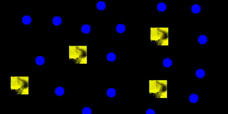

Learning Sensorimotor Capabilities in Cellular Automata
Learning robust creatures
Spatially localized patterns in cellular automata have shown a lot of interesting behavior that led to new understanding of self-organizing system. While the notion of environment is a keypoint in Maturana and Varela biology of cognition, studies on cellular automata rarely introduced a well defined environment in their system. In this paper, we propose to add walls in a cellular automata to study how we can learn a self-organizing creature capable of reacting to the perturbations induced by the environment, ie robust creatures with sensorimotor capabilities. We provide a method based on curriculum learning able to learn the CA rule leading to such creature. The creature obtained,using only local update rules, are able to regenerate and preserve their individuality and structure while dealing with the obstacles in their way..

Introduction
In Maturana and Varela work(cite), cognition is centered around how an agent "reacts" to the perturbation induced by it's environment . More precisely, they introduce the notion of cognitive domain of a self-organizing system which are all the perturbations induced by the environment which do not result in the destruction of the self-organizing system. Their notion of cognition is thus deeply linked with how a self-organizing creature will try to preserve its integrity in its environment. ("living is ")
From their theories, studies has been made to apply those notion to examples of self-organizing systems. For example, the game of life and especially the glider has been studied under their paradigm showing again the richness and complexity of such system. However, even if the glider in the game of life has shown to be a good toy model to explicit those theories with interesting interaction, they're also quite simple entity that are not very robust, with a lot of perturbation leading to destruction. (Also in those work, the environment wasn't well defined like walls food etc, but rather other structure.)
In biology, We also find sensorimotor capabilities at the macro scale for example in swarm of bacteria where a group of bacteria seem to avoid a wall of antibiotics. group decision making for obstacle avoidance
Other studies, taking inspiration from biological regrowth in some animals, focused on the recovery from Deformation/ damage , applying Cellular automata to build and regenerating damaged parts.
IN Lenia , we can see some sort of sensorimotor capabilities. However, even if there are interaction between some entity, there is no well define environment. The search for new creature in Lenia was first done manually testing parameters and mutating it or with simple evolutionary algorithm for moving creature for example. Other studies focused on exploring as much as possible the space of creature in Lenia using intrinsically motivated explorer . However this last techniques had a hard time finding moving creature.
In cellular automata, what's interesting is that we have the same local update rule applied to every cell (no cell has a special role ), yet it allows to have very complex self organizing structure. In this work, we'll show how to learn the Ca update rule leading to robustness and sensorimotor capabilities with walls. The creature we obtain, from the deformation induced by the walls on some part of it make new deicision at the macro level on where to go/how to react. What's even more interesting is that the computation made for the decision are all made in the creature itself, at the morphology level. (Each cell then from its neighboors know what it should do.)
In this work, we
no well define environment and creature obtained by luck and not very robust.
swarm robotics ?
The system

Lenia
The cellular automaton we will study in this work is Lenia . Lenia is a system of continous cellular automata where a wide variety of complex behavior has already been osberved, including what looks like sensorimotor-capabilities. In this work i will use the multi channel, multi kernel version of Lenia but for simplicity we will only use 1 channel for the creature and other ones for the environment.
A Lenia system like all CA starts from an initial pattern and iteratively update every pixel based on its neihgbours. The CA rule is given by the kernels and associated growth map.
Walls
To implement walls in Lenia we simply added a walls channels with a kernel from the wall channel to the creature channel. This kernel have a huge negative growth where there are walls and no impact on other pixels where there are no walls. This way we prevent any growth in the pixels where there are walls. This is similar to where they put antibiotic zone as obstacle where the bacteria can't live. The creature can only sense the wall through the changes/deformations it implies on the creature, so the creature has to "touch" the wall to sense it. (But because of the cellular automaton nature of the creature the information has to be transmitted to other cells.)
Note that we used kernel for the walls so that the system stays under the Lenia paradigm using local kernels only for the updates.
In this study, the creature can't have any impact on the walls. This differs from other studies such as in the game of life where the creature also perturb it's environment.
How Lenia glider behave with walls:
Differentiable Lenia
Now that the environment is defined, we want to learn both the initialization and the CA rules leading to interesting behaviors. All parameters of the CA rule will be optimized, as well as the initialization which will be a square of fixed size.( each pixel will have its value optimized)
To learn these parameters we chose to use gradient descent method. Thus we tried to make Lenia as Differentiable friendly as possible. To do so, the main shift is to use "free kernels", using kernels in the form of a sum of n overlapping gaussian bumps: $$x \rightarrow \sum_i^{n} b_i exp(-\frac{(x-rk_i)^2}{w_i}) $$. The parameters are then 3 n dimensional vectors: b for height of the bump, w for the size of the bump and rk for the center of the bump.

We did this shift because in the vanilla version of Lenia, the shape of the kernel was only given by a vector b of arbitrary size (but often max size 4). The number of bumps was given by the number of coefficient in b>0. However, the fact that the number of bumps depends on the number of coefficient > 0 prevents proper differentiation.
(if a coefficient is at 0 then it won't change with gradient descent as it doesn't play a role, and if a coefficient is >0 a gradient step can put it <0 which will make a strong unexpected change). We could have left the number of bumps to an arbitrary value like 3, and only optimizing the height such as they stay >0 but this would have been a strong limitation on the shape. The "free kernels", in addition to differentiation, allow more flexibility than the vanilla bumps but at the cost of more parameters.
However even doing so, differentiating through Lenia can be difficult because we often have quite a big number of iterations and each iteration has it's result clipped between 0 and 1.
Learning Moving Creature in Lenia
Before trying to find sensorimotor capabilities in our system a first step would be to find moving creatures like glider in the game of life. Note that moving creature in cellular automaton differ from other type of movement like muscle contraction or soft robot (article) by the fact that moving is growing at the front and dying at the back.
In this paper, we learn to develop morphology and motricity at the same time. The CA rule will both be applied to grow the creature from an initial state and be the "physics" that makes it move.
Target image with MSE error seems effective to learn CA rule leading to certain pattern \cite{mordvintsev2020growing}. ANd the fact that it's a very informative loss, thus helping with vanishing gradient problem made us choose this loss for our problem over other losses such as maximizing the coordinate of the center of mass . THe first target shape we tried was a single disk. However after seeing the robust creature obtained with this disk as target seemed to have a "core" and a shallow envelopp, we informally chose to move to two superposed disk, a large shallow one with a thick smaller one on top. The target shape has the formula: $$0.1*(R<1)+0.8*(R<0.5)$$. We chose on purpose to have the sum to be smaller than 1 because as we clip to 1 the pixel after each update it/s better to have pixel below 1 than pixel saturated if you want to have gradients.
However simply putting a target shape far from initialization and optimize towards it does not work most of the times. In fact, it works only when the target is not too far from where the creature ended before optimization (so after the random initialization) . This comes from the fact that applying a lot of steps, each clipped, prevents gradient from flowing. The solution we propose to go further than this is curriculum learning. https://avariengien.github.io/self-organized-control/
IMGEP and Utility of curriculum
In fact, once we obtain a creature able to go a little further than the initialisation, we can push the target a little bit and learn to attain it. This time the new target needs to overlap where the creature is able to go after the first optimisation. Then we just need to iterate this process. SCHEME
The effectiveness of curriculum with complex task has already been shown in \cite{DBLP:journals/corr/abs-1901-01753}. And in complex self organizing systems in https://avariengien.github.io/self-organized-control/ (wait for the paper)
One modular way we introduced it was using IMGEP \cite{Forestier2017IntrinsicallyMG} which has already been used as an explorative tool in Lenia to explore the morphological space \cite{etcheverry2020hierarchically} \cite{reinke2020intrinsically}.
The general idea of IMGEP is to iteratively set new goals to achieve and for each of these goals try to learn a policy that would suit this goal. THis way an IMGEP needs an interesting way to sample new goal for example based on intrinsic reward. It also needs a way to track the progress on this goal, and a way to optimize toward this goal. It also might use the knowledge acquired on other goals to learn new goals or attain them more quickly.
def update(perception_vector):
# The following pseudocode operates on
# a single cell’s perception vector.
# Our reference implementation uses 1D
# convolutions for performance reasons.
x = dense(perception_vector, output_len=128)
x = relu(x)
ds = dense(x, output_len=16, weights_init=0.0)
return ds
In our case, the goal space will simply be a 2 dimensional vector representing the position of the center of mass of the creature at last timestep. The way we sample the goals depends on the task but to have a moving creature that goes far in the grid, we will randomly sample position in the grid biasing the sampling toward one edge of the grid. we use MSE error between the last state and our target shape centered at the target goal to try to achieve this goal. The way we reuse knowledge acquired is by intializing the parameters by the one that achieve the closest goal.